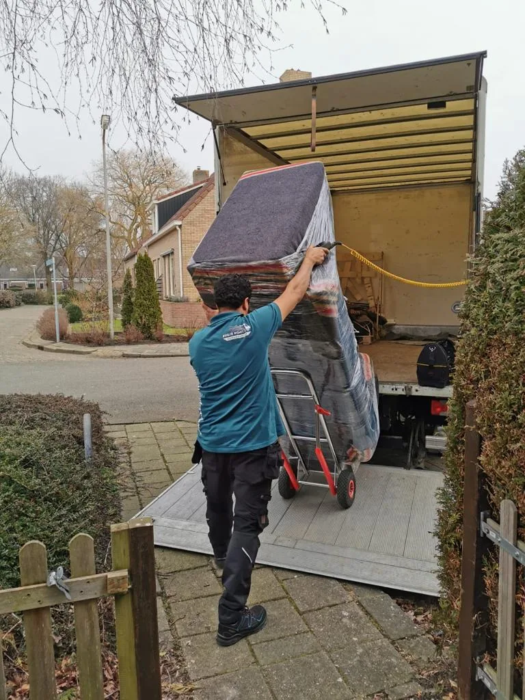

Woning moet leeg voor de oplevering
Huurwoning of koopwoning die op een vaste datum leeg en bezemschoon moet zijn voor de verhuurder of de nieuwe eigenaar.
Familiebedrijf uit Utrecht · meer dan 15 jaar ervaring
Wij ontruimen woningen, seniorenkamers, garages, bergingen en bedrijfspanden in Utrecht en omgeving. Bij een woningontruiming, een ontruiming na overlijden of een pand dat snel leeg moet, nemen wij het hele traject uit handen.
Snelle beslishulp
Iedere ontruiming is anders. Dit zijn de situaties waarin wij het vaakst helpen.
Huurwoning of koopwoning die op een vaste datum leeg en bezemschoon moet zijn voor de verhuurder of de nieuwe eigenaar.
Wij helpen nabestaanden rustig en zorgvuldig. Spullen die de familie wil houden, zetten we apart of brengen we naar een nieuw adres.
Bij een verhuizing naar een seniorenwoning of verzorgingshuis verhuizen we wat meegaat en ontruimen we de rest.
Kantoor, bedrijfsruimte, kelder, zolder of garage die leeg moet. Wij plannen het zo dat u er zo min mogelijk last van heeft.
Voor en na
Een ontruiming door Busje komt zo: alles eruit, afgevoerd en netjes opgeleverd.


Wat wij van u overnemen
Omdat wij ook verhuizen en opslag verzorgen, regelt u alles in één keer: wat meegaat verhuizen we, de rest ontruimen we.

Zo werkt het
Bel, app of vul de aanvraag in. Stuur gerust foto's mee, dan zien we meteen wat er moet gebeuren.
Wij komen langs, bekijken de woning en spreken vooraf één bedrag af. Geen nacalculatie.
Op de afgesproken dag halen wij alles leeg, sorteren in overleg en voeren af.
Wij leveren de woning bezemschoon op, klaar voor de verhuurder, koper of woningcorporatie.
Kosten
De prijs hangt af van de hoeveelheid inboedel, de verdieping en bereikbaarheid, en wat er afgevoerd moet worden. Wij komen langs en leggen vooraf één bedrag vast. Geen nacalculatie en geen verrassingen op de dag zelf.
Gaat er ook een deel mee naar een nieuw adres? Bekijk dan onze verhuispakketten.
Veelgestelde vragen
De belangrijkste vragen over het leeghalen en opleveren van een woning.
Dat hangt af van de hoeveelheid inboedel, de verdieping en bereikbaarheid, en hoeveel er afgevoerd moet worden. Wij komen langs en spreken vooraf één vaste prijs af, zodat u niet voor verrassingen staat.
Dat bepaalt u. Wat u wilt houden, zetten we apart, verhuizen we naar een nieuw adres of zetten we in opslag. De rest voeren wij af.
Ja. Heeft uw verhuurder of woningcorporatie extra opleveringseisen, bespreek die dan vooraf. Dan nemen we ze mee in de afspraak.
Ja. Wij werken rustig en zorgvuldig en overleggen met de familie wat bewaard blijft. U hoeft niet alles zelf te regelen.
Vaak wel. Bel of app ons, dan hoort u direct wat er mogelijk is en wanneer wij kunnen beginnen.
Direct contact met de eigenaar
App of bel ons rechtstreeks, of stuur uw aanvraag. Vrijblijvend.